Name: Math 349: Linear Algebra
Exam 2 Solutions
12 April 2001
It's kind of fun to do the impossible.
- Walt Disney
Instructions: Show all work to receive full or partial credit. All University rules and guidelines for student conduct are applicable.
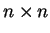
matrix A is a subspace of Rn.
It is enough to show that the null space of A is closed under
addition and scalar multiplication. Suppose x and y are two
elements of the null space, and c is a scalar. Then,
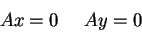
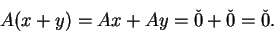
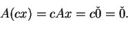
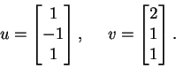
This is straightforward calculation using the fact that
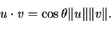
The solution is
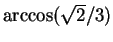
, 1.08 radians or 61,9degrees.
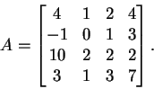
Finding the null space of a matrix is the same as solving the
corresponding homogeneous system. Performing elementary row
operations on A, one can put it into reduced row echelon form:
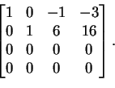
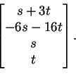
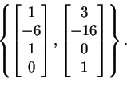
The nullity of A is the dimension of the null space, so the nullity of A is 2. Since the dimension is 4, the rank is 2 also.
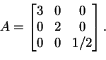
Before doing anything, you must examine the proposed inner product.
In this case,
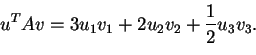
Now, we can start checking its properties.
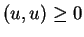
and that (u,u) = 0 if and only if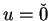
. Both are true because the proposed inner product is a weighted sum of squares.
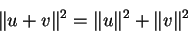
This property can be deduced directly from the properties of the
standard inner product.
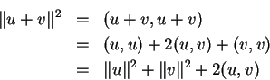
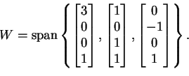
This problem wins the award for being the ugliest on the exam. Let's refer to the elements in the original basis as w1, w2 and w3.
Performing the Gram-Schmidt process is elementary, but the calculations tripped some people.
For the first element, simply take w1.
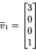
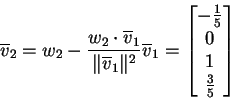
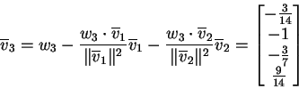
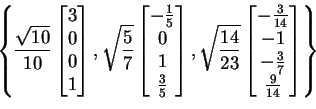
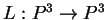
be the linear transformation defined as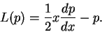
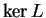
.
A general element of P3 is
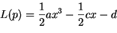
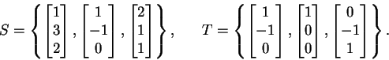
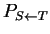
from the T-basis to the S-basis. Find [u]S, if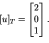
There are two ways to compute the transition matrix, either by row
operations on the augmented system or by directly computing
MS-1
MT. Either way, one obtains
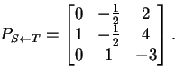
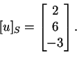